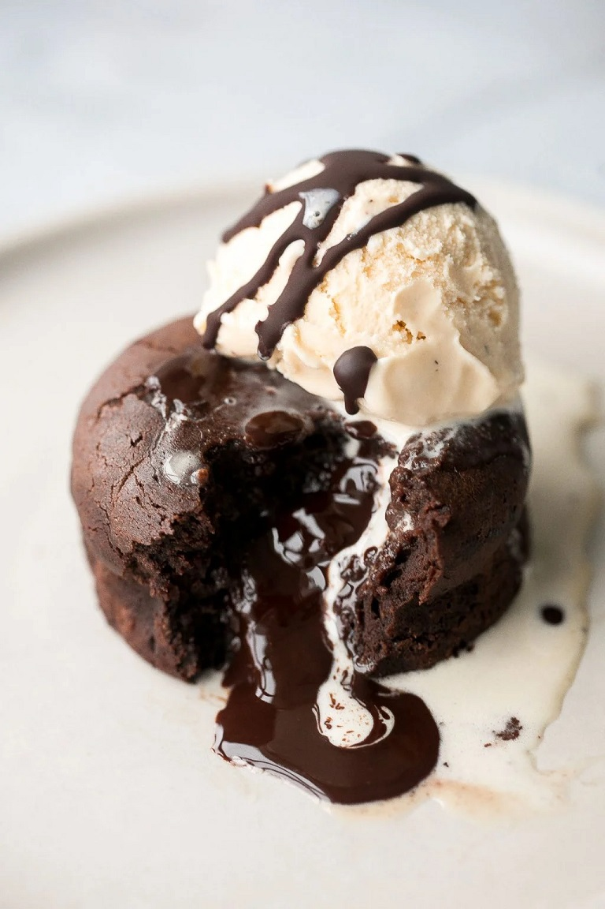

How to Make the Best Molten Chocolate Lava Cakes
These fancy little cakes are the perfect treat to make for Valentine's Day, Mother's Day, birthdays, or really
for any occasion. Whatever occasion you are celebrating (even if it's just to satisfy a late-night craving),
it's all about individual desserts these days so these molten chocolate lava cakes fit right in.
INGREDIENTS
- 6 oz. semi-sweet chocolate (or 1 cup chocolate chips), coarsely chopped
- ½ cup unsalted butter, cut into ½ inch cubes
- 2 large eggs
- 2 large egg yolks
- ½ teaspoon vanilla extract
- ¼ cup confectioners' sugar
- ⅛ teaspoon salt
- 3 tablespoons all-purpose flour
STEPS
- Preheat oven to 425 F. Grease four 6-oz. ramekins or three 8-oz. ramekins with non-stick cooking spray and
dust with cocoa powder, tapping out the excess cocoa powder. This will help the lava cakes come out easily
when inverted.
- Melt the chocolate and butter in a medium heat-proof bowl and set aside to allow it to slightly cool. You
can melt the chocolate either on the stove or in the microwave.
On the stove: Bring 2 inches of water to a low simmer in a saucepan over medium-low heat. Then turn
the heat to low and place medium heatproof bowl of chocolate with butter on the mouth of the pot. Make sure
that there is a gap of a few inches in between the bottom of the bowl and the water (You can also place a
bowl on a steamer attachment on top of your pot). Stir the chocolate constantly as it melts. Stir until the
chocolate is completely smooth and melted. This should take a few minutes.
In the microwave: The second way to melt chocolate (and an easier way) is in the microwave. Place
the medium heatproof bowl of chocolate and butter into the microwave and microwave in 20 second intervals.
Remove the bowl at each interval and stir well. Repeat until the chocolate has completely melted. Stir until
completely smooth.
- In a medium mixing bowl, use an electric hand mixer or a whisk to beat together the eggs, egg yolks, vanilla
extract, sugar, and salt, on low speed, until combined, about 1 minute.
- Pour in the melted chocolate into the egg mixture, along with the flour. Use a rubber spatula and fold it in
until fully combined. Note that the batter will be thick but should not be lumpy.
- Place the ramekins on a quarter sheet baking pan and divide the batter between them. Bake for 12-14 minutes
until the edges look solid and firm. The tops will still be soft with a slight jiggle in the center. Do not
overcook as overcooking will cause the center to completely solidify and not be gooey. If you are not sure
how hot your oven runs, I suggest making one first to test. If it has solidified too much, then adjust the
bake time lower. Mine turns out perfect at exactly 12 minutes.
- Allow the cakes to cool in the ramekins for 1 minute, then cover each with an inverted plate and use an oven
mitt to flip them over and release the cakes onto the plate.
- Add toppings (such as a scoop of vanilla ice cream, dusting with powdered sugar, garnishing with fresh
fruit, or a drizzle of salted caramel sauce or chocolate sauce). Serve immediately.
Return to top
Return to home page